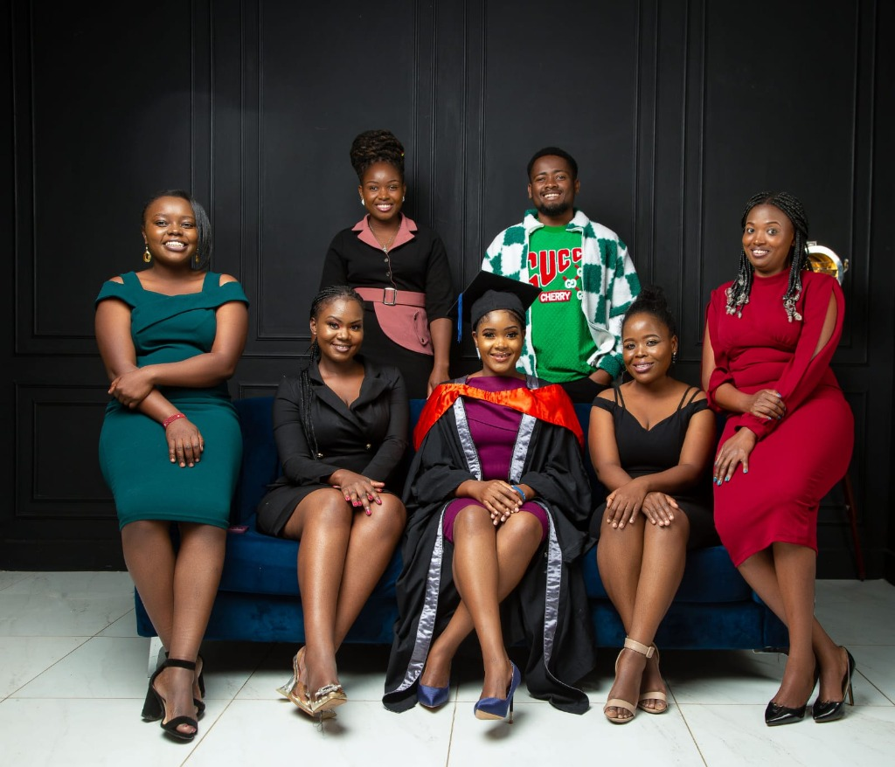

A little about me
I'm a service and product designer with a background in Telecommunications and Information Engineering, currently pursuing a master's in Data Science.
My curiosity has taken me from designing digital services to researching how people learn, analyzing data, and contributing to open-source projects.
I enjoy understanding how things work, listening to the people who use them, and finding practical ways to make things better.
Explore my experience →
What matters to me
Listen first
Understand people before designing solutions.
Stay curious
Keep learning, questioning, and exploring different perspectives.
Make it meaningful
Create work that's useful, understandable, and grounded in evidence.
The people behind my journey
My career has been shaped by curiosity, hard work, and the people who believed in me long before I had much to show for it. My parents, especially my dad, have been a constant source of encouragement. They've helped me keep going through moments when giving up felt easier. Whatever I achieve, that support will always be part of the story.

